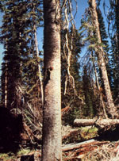
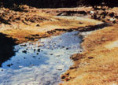
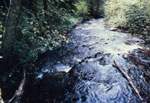
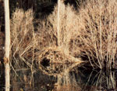
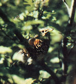
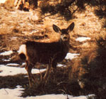
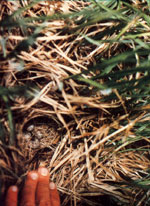

Like most MOTHER-readers, I've always enjoyed watching wild animals and birds . . . and I've done my part to support wilderness areas in which such creatures can live in relative safety. However, I knew little about the actual needs of wildlife. I thought that, as long as there were pine trees, there would be deer . . . and that the mere existence of shade trees and insects would guarantee a nearly infinite variety of birds. Then I married a wildlife biologist . . . and my naive notions were shattered!
I learned, for instance, that while pine forests do provide shelter for deer, such habitats offer almost nothing in the way of food: Grazing animals need meadows to support the kinds of plants they eat. I also found out that a number of birds don't nest in trees or eat bugs . . . and that many wildlife species simply can't survive in the high alpine regions that make up most of our wilderness areas. Such creatures may require grasslands, wetlands, shrublands, or young or old forests instead. And, the loss of these diverse environments often contributes to wildlife extinction.
In today's world, society seems bent on dedicating every square inch of the planet's resources to human use . . . but we can, as individuals, help insure the survival of some of our wild friends by making sure that we each preserve and provide some habitat, no matter how small, in which the birds and beasts can "feel at home".
My husband and I have lived-at different times-on five acres in the Blue Mountains of eastern Oregon . . . on a small city lot in Missoula, Montana . . . and now on 20 acres of farmland in western Montana. And, in each place, we've been successful in saving, or recreating, some habitat for wildlife.
I'd like to share the things I've learned while working with my "mini-parks", so that-no matter what the size, type, use, or location of your land-you can do your bit to help preserve the numbers and varieties of untamed creatures.
When the pilgrims arrived, the entire eastern one-third of this continent, as well as many of its western regions, was covered with dense forests. Fish and other aquatic creatures were abundant, and the banks of the gushing streams and rivers were overgrown with vegetation. Pools, created by boulders and dead logs, provided spawning grounds for trout and salmon, while the virgin forests served as winter cover for deer, elk, and moose . . . as well as nesting places for such winged predators as barred owls and goshawks.
The forest floor was littered with deadfall, and-as the material rotted-it returned nutrients to the soil and was used as a source of food and shelter by small animals. In the same way, snags (dead but standing trees) provided homes, as well as "restaurants", for insect-eating birds.
There were also many small clearings in which the grazing and browsing animals could feed. And-surrounding the glades-the all-important "edge environments" were visited by numerous creatures . . . who ate in the open areas but could quickly seek shelter among the protecting trees.
Each year, wildfires burned old forests and thus created new clearings. These blazes also caused some trees to release seeds and stimulated certain other seeds to germinate. It was an efficient cycle.
Today, we manage most of what's left of our forests for maximum timber harvest. Old growth stands are removed before they become "decadent" and lose their wood value, and only those species that provide the most (and most profitable) wood are replanted. For economic reasons, we often clear-cut large 125- to 100acre) tracts. There's still an edge environment around such areas, but-because the clearings are so large-the centers are all but useless as habitat for many species.
Where firewood is gathered, our forest floors are often left nearly bare. Snags are scarce, too, so the number of insect-eating birds is reduced, while the populations of harmful insects often increase to epidemic proportions . . . with disastrous results.
In some areas, logging is done right up to the edges of streams. The banks then cave in . . . creekside cover is destroyed . . . and the water temperature rises, killing game fish. The loose gravel in spawning areas becomes buried under silt and thus made unusable for fish that need such an environment for reproduction.
In the West, prime lowland wintering spots for deer and elk are often subdivided into small lots. People, dogs, and offroad vehicles harass the animals, and the winter range-for all practical purposes-is lost.
We probably can't stop cropping our forests (after all, I wouldn't want to live without 2 X 4's, toilet paper, and THE Mother Earth News(restricted)), but we can learn to manage our timbered regions to accommodate wildlife and wood production: a goal that my husband and his cohorts are working toward. However, those of us who live on small forested plots can do our part now! Here's how:
If you live in an area where big game animals feed, teach your dog to leave the beasts alone . . . or keep it inside.
When you gather firewood, don't clean the place out completely. If the wood seems a little rotten and probably won't put out much heat anyway, leave it. And, when you come across a big, dead standing tree, recognize what it means to wildlife . . . and leave it in place as a home and feeding ground for nuthatches, bluebirds, and woodpeckers.
If there are no snags in your area, you can encourage 'the nesting of "deadwood" birds by putting up shelters. The size of the box and the entry hole, along with the height at which the dwelling is placed, will determine what species makes use of it. [EDITOR'S NOTE: See "Put Birds to Work in Your Garden", MOTHER NO. 64,, page 32. The issue is available for $3.00 plus $1.00 for shipping and handling from THE Mother Earth News(restricted), P.O. Box 70, Hendersonville, North Carolina 28791.]
Finally, keep all your livestock out of streams and give the native grasses and brush a chance to come back and hold the banks together.
Before our great-grandfathers moved west onto the prairie, that region was a sea of tall grasses, ribboned with small streams that were lined with rushes and willows. The nomadic grazing animals-buffalo and antelope-found plentiful food on the open range, and shelter in the creek bottoms. Song birds, predatory birds, and rodents all sought nourishment, shelter, and nesting grounds in the tall grass and brush that followed the courses of the streams.
Today, our vast prairieland is crisscrossed with fences and roads . . . the fields are plowed or heavily grazed . . . and the nomadic animals won't ever be back in the numbers that once existed. Unfortunately, too, most of our original prairie birds nest in the springtime . .. whereas the majority of prairie crops don't provide nesting cover until midsummer. The land often lies open and bare to soil erosion from wind and rain . . . and the meandering streams have become muddy ditches in which cattle wallow to escape the summer's heat.
Crops are planted from fence to fence. Herbicides destroy the native grasses, and insecticides poison the birds and their food sources.
Of course, it would be unrealistic to expect our farmers to sacrifice their livelihood (and perhaps our lunch) . . . but we can, with conscientious planning and management, give some prairie space back to support the native species, while still maintaining high crop yields. And, if you live in such an area, you can do your share:
Keep your rangeland in good condition. Do some seeding to reestablish grazed-out grasses and maintain good ground cover. (Seeds for plants native to the region can be obtained from Prairie Restoration, Inc., Dept. TMEN, P.O. Box 327, Princeton, Minnesota 55371. Send a self-addressed, stamped envelope when writing for information.)
Rotate your livestock . . . don't allow the same animals to graze in the same field for an entire year. Instead, open one field this spring, and then allow the pasture to go to seed and put on some root growth in the fall. Next year, graze it in the autumn, allowing the grasses to grow as nesting cover during the spring.
Better still, rest a pasture for an entire year . . . to let it reseed, put on growth, and provide winter cover for birds and small mammals. Distribute your livestock's watering holes, salt licks, and shade so that the animals won't spend all their time in the same spot, overusing and compacting that area. And always fence domestic animals out of stream bottoms.
Next, try to reestablish the stands of grasses and brush along streamsides in order to attract birds and small animals. (This action will also help to maintain water purity . . . reduce the stream's flow rate . . . provide shade . . . and cool the temperature enough to support greater numbers of fish, which-of course-do a good job of eating mosquito larvae! )
Leave three- to ten-foot strips of uncultivated land along roads and fences where pheasants, grouse, quail, and other ground birds can find nesting cover. The "breaks" will also cut the force of the wind across the surface of plowed fields, and result in less blowing dust and loss of topsoil.
Swamps and marshes-in shallow, saltwater estuaries or in wide, low plains where sluggish rivers meandered and overflowed-were common at one time. Herons, raccoons, beavers, turtles, and songbirds were abundant in such areas then. Ducks, geese, cranes, and other migratory water birds used the wetlands for nesting, and predators (including coyotes, foxes, and hawks) found that the regions could be counted upon for an ample food supply.
Now, too many of our swamps and marshes are drained . . . dikes are built . . . and rivers are dammed and contained in sterile channels. The beavers are gone from numerous areas of North America, and the varieties and numbers of reptiles and birds are vastly diminished. There are fewer stands of rushes and grasses available for the use of nesting water birds . . . and, while populations of predatory animals are also reduced, the prey of such species are more vulnerable because of their increased visibility. A few potholes do remain, but-as is the case in the prairies-heavy livestock use and continuous farming have often eliminated their edge cover.
Worse yet, land developers have gobbled up many swamps and buried them under airports and housing tracts. We can't very easily retrieve such valuable habitat, but we might be able to restore a few pockets . . . to insure the survival of some of the species that are dependent on wetlands.
For one thing, we can limit livestock access to watering holes by fencing a portion of our ponds. This protection will let the tall grasses and rushes thrive. Or we could create ponds and marshes . . . by flooding a few acres of our less productive fields. Then we could stock native fish and encourage birds-which would help control insects-by establishing native grasses and brush along the banks.
There's a lot that you can do-even if you don't own farmland-to invite some wildlife into your yard. For example, plant bushes and trees that flower and fruit at different times of the year, and you'll extend the feeding season and accommodate more species.
Tall grasses, such as red or green fescue, will-if left unmowed-nourish the seed-eaters and offer winter protection for ground birds . . . while a combination of tall and short shrubs and trees will offer a variety of nesting and cover habitats for diverse species. Evergreens, in particular, will provide food for seed-eaters . . . cover for wintering birds . . . and a windbreak for you!
Remember that every species needs food, water, winter cover, and nesting shelter. If you can fulfill each of these requirements, you're bound to end up with birds and small mammals as neighbors . . . and a yard that appeals to such fauna is aesthetically pleasing. (A pamphlet entitled "Inviting Wildlife to Your Back Yard", which lists appropriate plant species for each climate, is available for 250 from the National Wildlife Federation, Dept. TMEN, 1412 16th Street, Washington, D.C. 20036.)
Better yet, try to get each of your neighbors involved in his or her own backyard project. After all, one yard will make just a small (even though significant) contribution . . . while a whole neighborhood can equal a mighty big habitat!
While living in eastern Oregon, we found that our job consisted mostly of inaction. We didn't rip up the native grasses and shrubs to plant a lawn, and we cut down only one tree (which was threatening to fall on our house). At the same time, we left two rotten but unhazardous snags that looked like they'd topple in the next breeze. (As it turned out, they withstood even 70-MPH winter winds and sheltered numerous pairs of nuthatches, wrens, and bluebirds each spring.)
Once, when we thinned out a stand of insect-infested trees for a neighbor, we peeled each cull as soon as we cut it down . . . to kill larvae living in the cambrium layer beneath the bark, before the immature insects could develop and attack other trees. One infected tree in the grove, however, housed a pair of nesting red-breasted nuthatches . . . so-to save their home-my husband climbed and peeled the tree where it stood. It was a lot more work, but worth the effort to us and (I hope) to the birds.
At that time, we lived in the middle of a large piece of open rangeland that was in very poor condition, so we shut the cattle out of our five acres, using a pole fence that deer and elk could easily negotiate. The native grasses were able to put on some growth, which helped to hold the soil on our slope . . . and the wildflowers had a chance to go to seed and provide food for seed-eaters.
On our small lot in Missoula, we tried to create a little wildlife habitat in the "desert" of a newly created subdivision. We planted a small lawn that included some native mountainside flora, to offer food and shelter.
We're living now on 20 acres of farmland and trying to re-create its environment of 100 years ago. Since much of the topsoil has been eroded away, we plan to let the worst areas rest for a few years-to develop a little better grass cover-after which, we might plant a green manure crop.
We have about one acre that's too shady to produce a paying harvest but too big for a lawn . . . so we're going to plant a mixture of grains and let them go to seed each year to make food and shelter for the local ringnecked pheasants and Hungarian partridges. And, of course, we've put in a number of native shrubs and trees.
Along the eroding irrigation ditch we'll once again put in a fence to keep the livestock out, and establish some hardwood shrubs to provide bird nesting and feeding areas and to help hold the soil. We're also planning to excavate a small pond, stock it with fish, and plant some cattails and rushes . . . in hopes of attracting nesting mallards and red-winged blackbirds. And, if one of the 100-year-old cottonwoods around our house dies, we'll trim it down to a safe size and leave it as a snag.
Each one of us can, you see, do something to re-create the right environment for whatever wildlife was on our land before we came. It takes a little planning, but there are lots of people willing to help: the Soil Conservation Service, your state's fish and wildlife department, the U.S. Forest Service, and the agricultural extension service at universities . . . to name a few good sources of information, alternatives, and-sometimes-even the free or inexpensive seedlings you need!
You can stop using chemical insecticides, too . . . remembering that of the 86,000 species of insects in our country, 76,000 are more of a help than a hindrance! When planting windbreaks, you can choose varieties that will provide food and shelter for animals and birds. And don't use up every square foot of your property for human consumption crops. Let a little of it revert to its native flora.
Perhaps most important, always be assured that whatever you do-no matter how small the contribution may seem to be- will make a difference . . . to the wildlife . . . to you . . . and to the world your children's children will inherit.
|
 Old trees provide essential wildlife habitat. |
 Eroded stream banks raise water temperatures and prevent spawning. |
 Overgrown banks protect water quality |
|
 A beaver lodge is now a rare sight. |
 A bird in a bush is worth a lot! |
 Deer need meadows for feeding, as well as woods for shelter. |
|
 Few grasslands are left for ground-nesting prairie birds. |
|
|